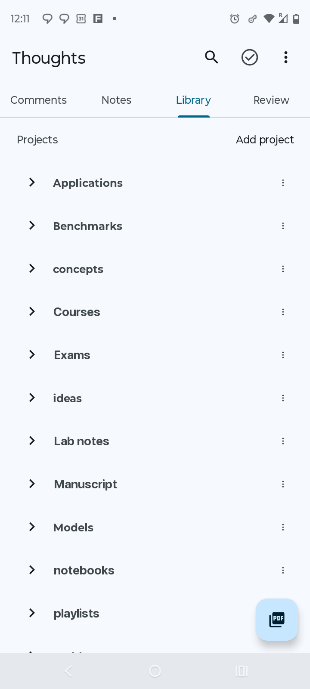
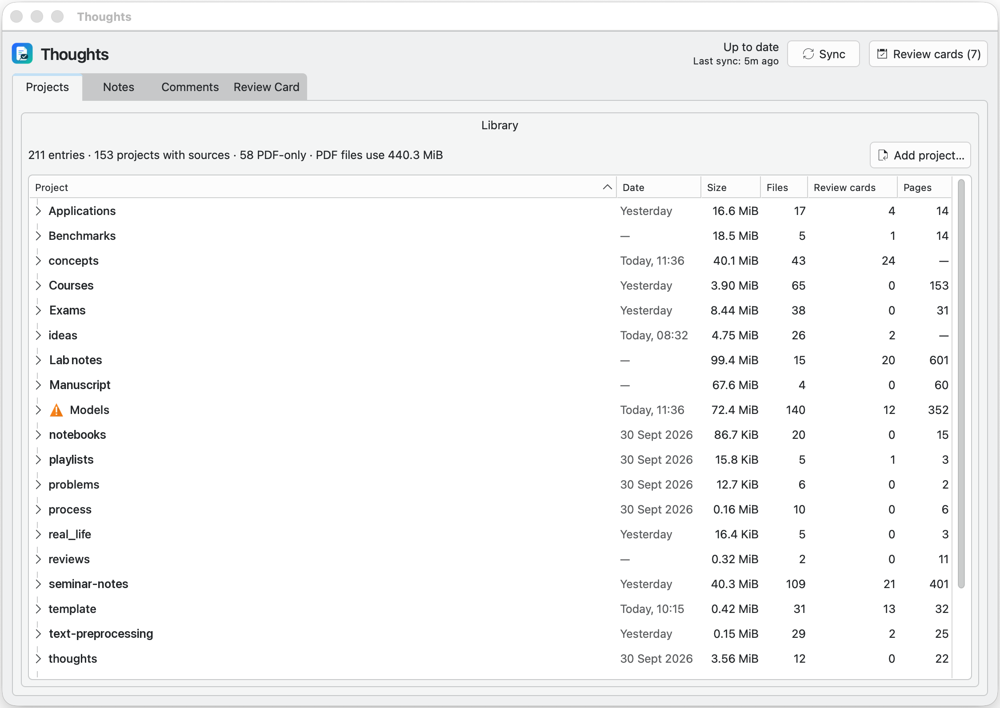

Thoughts is a workspace for reading PDFs, keeping comments and notes, reviewing proposed source edits, and studying material through review cards. The desktop application and Android application keep local data so that reading and ordinary editing can continue offline. The Fedora server receives synchronized changes and produces published PDFs from the corresponding sources.
A project groups documents and their related material. A project comprises documents and sources. Documents are PDFs. A document can come from editable sources or from an imported PDF. The PDF is the reading view. Thoughts calls comments, highlights and strikethroughs, review cards, and proposed source edits annotations. Each annotation has its own identity and history, and its type determines the available actions. Proposed source edits are also called proposals. Standalone notes are independent entries rather than document annotations.


Thought Client for mobile (left) and desktop (right).
Thoughts has two main components: the navigation area and the PDF viewer. The navigation area contains Library, Notes, Comments, and Review. Opening a document or following a comment to its passage takes you to the PDF viewer. The PDF viewer supports multiple tabs, each displaying a document. On Android, tap the button in the bottom-right corner of the Library to return to the PDF viewer. Press and hold the button to access additional actions, including Add project. It comprises of four main tabs: Comments, Notes, Library and Review Cards.
The Library tab shows all your projects. Each project groups PDF documents and their associated source folders. Every document belongs to a project. When a new project is created, Thoughts automatically creates a default source folder for it. This folder contains thoughts-project.json, the project manifest, which lists all project documents and records their selection and reading order. Imported PDFs are copied into the default source folder. Additional source folders can be connected to the project, so a project can contain documents from several source folders. However, each document built from sources uses files within a single source folder.
Icon meaningDocuments appear in the Library as soon as they are added, even before their PDF is ready. A clock icon means the document is waiting for its first PDF build. The icon next to each document tells whether a PDF has editable sources linked to it.
To add a connected source folder, right-click Sources in a project and choose Import sources…. From folder… copies the documents you select, together with the files they need to build, into a new folder inside your Thoughts folder. From Git repository… clones the repository there once; pulling, committing and pushing are then up to you. The original folder or repository is not linked: later changes to it do not reach Thoughts, and edits made in Thoughts do not change it. Thoughts Sync transfers saved changes between the folder, the Thoughts server, and your other devices. Files are included unless excluded by the folder’s .ThoughtIgnore rules. See the default .ThoughtIgnore file for the default exclusions. If you exclude a previously synchronized file, the next Sync removes its server copy while keeping the local file on the device where you added the rule. Other devices that still synchronize the file may delete their local copies when they receive that removal. For the relationship between Thoughts Sync and Git, see Section 6.
Sources shows the files included in Thoughts Sync, grouped by their source folders. Each connected source folder appears directly under Sources, alongside the project’s Default source folder. Each folder shows a name, by default the imported folder’s or repository’s name; choose Rename… on the folder to change it on all your devices, which leaves the folder itself where it is. Files and subfolders follow the folder’s actual directory structure, and a connected folder remains visible even when it contains no included files. The tree includes files already synchronized and new or modified files waiting for Sync. Selecting a document for PDF rendering does not change whether its source files are synchronized or shown in Sources. Pending proposals in included source files can be reviewed before the document’s first successful PDF build.
Use the project’s Documents menu to import a PDF into its Default source folder. The original file remains at its original location. The imported copy appears immediately in Documents for reading and ordering and in Sources > Default source folder as a stored file. Both entries refer to the same document and share its comments and review cards. Thoughts Sync transfers the imported copy and its project membership to your other devices. Storing the PDF in Sources does not give it editable sources, so its status remains PDF without editable sources.
When a file is deleted or moved out of a monitored source folder, it disappears from Sources after its absence has been confirmed. Each document known to depend on that file remains visible in Documents, and its link icon is replaced by a warning icon. The warning identifies the missing source paths, for example, “Missing source: tex/source/release.tex”. The document row otherwise keeps its existing appearance, and its last available PDF remains readable. A shared missing input warns every document known to depend on it. The user can click the missing-source warning and choose to remove the affected PDF’s entry from Documents. This action removes only that logical entry and archives its associated annotations. It does not delete any source file. Other documents that depend on the same missing source remain listed with their own warnings.
Right-click a source folder and choose Move to project to transfer it to another project. This action transfers the folder, its files, its associated documents, and their annotations to the destination project. The transferred documents and annotations retain their identifiers, content, and history.
The Library’s top level contains only projects. Every document belongs to a project, including imported PDFs without editable sources.
On desktop, every project provides Manage documents… and Import HTML, PDF, Website… in the context menu of Documents as soon as the project is created. Double-clicking a project containing documents opens one continuous reading view in the configured order, including when every document is an imported PDF. The client presents the individual document PDFs together without waiting for a combined PDF to be generated. Use the Library project actions to create or rename a project. The desktop order dialog lets you move documents before saving the new order. The saved order belongs to the project configuration and reaches other devices through Sync. Reordering unchanged documents updates the reading composition without rebuilding their PDFs. Comments, review cards, and bookmarks remain associated with their documents when the order changes. A combined PDF is generated separately when an export is requested.
Use Export combined PDF… on a project to get a single file for sharing or printing; reading a project never needs one. Every document starts ticked; untick the ones to leave out. The server builds the export from the project’s latest synced revision, which can be newer than the one on this device. Edits that have not been synced are not included, and exporting never starts a Sync. On desktop you choose where to save the file; on Android the share sheet opens, also when you share a project from the reader. If the exported revision is older than the one you are reading, Thoughts says so. A failed export does not affect reading or Sync and can simply be retried.
Open the project’s document list to choose which documents are included in the project and to arrange their order. The list shows every document of the project, imported PDFs included, followed by entry points found in its source folders that have not been added yet. Each document has a checkbox controlling whether it is included in the project. An unchecked document is not built and does not appear under Documents or in the reading view; it stays in this list and keeps its position. Each row has a drag handle to change its position. Dragging a document changes only its order and does not change whether it is included. One Apply button saves the selection and order together, while Cancel discards changes made in the dialog.
Add an HTML file, a PDF, or a website to the project.
An unlinked PDF is a document without an editable source linked to it. Right-click the document under Documents to access its available actions.
Open the selected document in the PDF viewer.
Change the document’s display name without changing its PDF filename or identity.
Remove the document and its corresponding comments and review cards from the project. The original files remain. The change reaches other devices through Sync.
Choose a destination project and move the document and its annotations there, preserving annotation content and associations and removing their membership in the original project.
On the desktop, the Library shows these columns for each project:
Date: for a project or document, when its PDF was last built; for source files and folders, when they were last modified.
Size: for a document, the size of its PDF; for source files and folders, their size on disk, counting only files included in Sync; for a project, its PDF plus its included source files.
Files: the number of source files included in Sync, after .ThoughtIgnore rules.
Review cards: how many review cards belong to a document or project.
Pages: the page count of a document, or the total for a project.
A dash (—) means a value is not known yet, and a document waiting for its first build shows “Not built yet”. On the phone, each project and document shows its card and page counts under its name; Show in Library in the Home menu turns them on or off.
Within one document, use the source language’s own references. To link to another document, first place a source label at the destination. A source label is a name for a place in a document that links from other documents can open. A link names its target document, the source label in it, and the text the reader clicks. There are four kinds of links between documents:
to another document of the same source folder, named by its path within that folder;
to a document of a different source folder, named by that folder and the path within it;
to an imported PDF of the same project, named by its Library filename without .pdf;
to an imported PDF of another project, named through one of that project’s docs- source folders.
The interactive examples explain how each kind is written in LaTeX and in Markdown, including the anchors that links to imported PDFs use instead of source labels. The target document must be included in its project. A link to a document of another source folder opens that document’s published PDF, so it works only once that PDF has been built with the label. The target’s later changes do not rebuild the linking document; its link is resolved again the next time it is built. A link whose target is not included, cannot be found, or lacks the label or anchor stays inactive: its text remains but cannot be clicked. An inactive link never blocks the build of its document or of any other, and the document’s status lists its inactive links. The older LaTeX commands TexLink and CrossTexLink still work in existing sources. They take a path that starts with the source folder and an ordinary LaTeX label, or document-start, instead of a source label. New links use the forms in the examples.
Thoughts supports adding self-contained HTML pages to a project and opening them from links in a PDF or directly from Sources. HTML sources can be located within existing project sources and Thoughts automatically picks them up and shows them under Sources.
Each HTML source must be a single self-contained UTF-8 HTML file no larger than 100 MB. Its JavaScript, CSS, images, fonts, and data must be embedded in that file. References to neighbouring files are not supported, even when those files are in the same project. Inline JavaScript, CSS, embedded images, and downloads are supported. External resources, network requests, frames, forms, and browser storage are unavailable.
You can right click on projects to have this entry: /Users/alex/Documents/screenshots/Screenshot 2026-09-20 at 17.29.16.png Deleting a project will delete also all the comments, agent edits and reviews associated to it.
In list views with columns, click or tap a column heading to sort the entries by that column. Select the same heading again to reverse the order. An arrow indicates the current sorting direction.
On desktop, double-click on a source opens it in VS Code. Choose Open With… to open the source with a different application. For self-contained HTML, if you do Open with "Browser" it will allows you to render the app on the browser.
Comments, highlights, and strikethroughs are annotations created by selecting text or a region in the PDF reader. Review cards and proposed edits are described in their own sections because they have different actions. When a comment or text-markup annotation is confirmed, the client uses its locally installed PDF, source files, and source mapping to identify the corresponding passage in the editable source. This process is called source localization. The Linking status field for these annotations reports:
Linked when localization succeeds.
PDF without source location when the document has no editable source, so the annotation retains its PDF position without a source link.
Linking failed when automatic localization fails, in which case the missing connection can be established in the source file.
For linked comments and text markup, the source markup is authoritative for their content and deletion. Editing that markup updates the corresponding annotation in the UI without requiring Sync. Editing a source file in another application updates these annotations and their statuses without bringing Thoughts to the front.
In addition to PDF annotations, Thoughts also supports standalone notes. Standalone notes are short, independent entries for reminders, tasks, and ideas. A due date or a specific location can be assigned to them. They do not belong to a project or PDF and appear in the Notes tab. Creating, editing, and deleting a note does not require source localization or a PDF build. Changes are saved automatically on the device, while Sync propagates the saved changes to other devices.
Android includes a quick-note entry point. Press Done to save a new quick note. Delete a note explicitly when it is no longer needed.
A proposed source edit, or proposal, is an annotation containing a reason, the original source text, and the proposed replacement. An addition has no original text, while a removal has no replacement text. The proposed version can already be visible in the rendered PDF even while the proposal remains pending. Seeing that text in a PDF therefore does not establish that it has been accepted.
Select a proposal in the Comments view to inspect its explanation and alternatives. Review the currently displayed revision, since an agent can revise a pending proposal without changing its identity. Each proposal also records when it was created and which agent conversation created it, so it can be traced back to the task that prepared it.
For an agent proposal, the Modified column shows when Thoughts last recorded a revision of an existing pending proposal, such as an agent changing its explanation or proposed replacement text. A dash means that no revision time is recorded for the proposal.
Accept Proposal retains the proposed replacement and removes the proposal wrapper from the editable source. Reject Proposal retains the original text instead. For an addition, rejection removes the proposed addition. For a removal, acceptance removes the original text. Accept and Reject are available in the Comments view on the desktop, in the PDF viewer and source review on the phone, and above each proposal in the VS Code extension. A proposal whose markup is damaged is shown with its problem and cannot be accepted or rejected until its source is fixed, while the other proposals in the same file stay available.
After a decision, check whether the source change is still local or has reached Fedora. A later build updates the published PDF to reflect the resulting source. On Android, source review depends on the installed editable source bundle for the document. If that source bundle is unavailable or stale, resolve the source state before retrying the decision.
The explanation and the proposed text of a pending proposal can be edited directly in its source, and Thoughts shows the edited proposal after the next Sync. Its identifier, original text, and creation details must stay unchanged. Accept or reject a proposal only in Thoughts or in the VS Code extension, never by deleting or rewriting its markup by hand, because Thoughts cannot tell such an edit from an accidental one. If the markup of a pending proposal disappears without a decision, the proposal stays in Thoughts and appears under Issues as Removed outside Thoughts. Restore Proposal puts the markup back into the source, and when the surrounding text has changed so that it cannot be placed safely, Thoughts offers to copy the proposal’s text instead. Dismiss removes the proposal from Thoughts without changing the source.
Review cards are annotations that turn PDF passages into material that can be reviewed according to intervals selected by the user. Review cards information is accessible outside Thoughts Review cards are created manually in the PDF viewer or in the source linked text.
Open the review area and select the available project or deck scope. Read the question, attempt an answer, and reveal the covered answer region when ready. The study controls distinguish Correct, Skip and Wrong. Correct means that the material has been internalized. Skip means that you don’t really care about the material. Wrong should be used sparingly, and means that the material is wrong. Inspect the interval shown with the action, and change it through the available timing choices when needed. The review mark and the interval are separate choices. The interval determines the next review time and can also be set to Never. Never leaves the card without a next review date while preserving the card and its history. Selecting a finite interval again schedules the card for a future review.
Each review card supports an optional free-form plain-text note stored as metadata attached to the card. The note can be viewed, edited, or cleared from the card’s details on Android and Desktop. It can contain personal reminders, explanations, or context for future reviews. Editing the note preserves the card’s question, answer region, source link, review history, and next review time. Changes are saved locally and synchronized with the card when the user runs Sync. Editing a note does not require a PDF rebuild or source-linking operation.
The card browser displays one row per card, with selectable columns for Created, Question, Due, Project, Document, Page, Source, Review State and Card Status.
Review StateReview State shows the card’s most recent review assessment and the total number of times it has been shown during reviews.
Card StatusCard Status describes the card’s source link and placement in the current PDF.
Linked means the card is linked to its source and its answer region is located in the current PDF.
PDF only means the card has a verified answer region in a PDF without editable source.
Link pending means source linking is waiting to run or is in progress.
Link failed means an attempt to establish the source link failed.
Link removed means a completed source check confirmed that the card’s previously linked markers are absent.
Source unavailable means the source cannot currently be read or checked, so the link cannot be verified.
Placement pending means the card is linked to its source and is awaiting placement in the current PDF.
Placement failed means the card is linked to its source, but its answer region could not be located in the current PDF.
Link removed and Source unavailable preserve the card and its review history. Explicitly deleting a card removes it from the browser.
Card filtersThe card browser provides the filters New, Seen, Never, Current good, Current Skip, Current wrong, Unavailable and All cards.
New shows cards with no recorded review action.
Seen shows cards with at least one recorded review action.
Never shows cards whose current interval is Never.
Current good shows cards whose most recent review mark is Correct, meaning that the material has been internalized.
Current Skip shows cards whose most recent review mark is Skip.
Current wrong shows cards whose most recent review mark is Wrong, meaning that the material itself is wrong.
Unavailable shows cards with issues such as source-linking, PDF-placement or other card-specific problems, with the reason shown for each card. These cards are not available for reviews and require
All cards shows every card that has not been deleted.
These filters overlap because review history, the current mark, the selected interval and annotation issues describe different aspects of a card. Seen includes cards marked Correct, Skip or Wrong, and any card can have an issue. Current refers to the most recent review mark, independently of whether the card is due. The Due column shows the next review time, or Never when no further review is scheduled.
Every interval selection, including Never, and every review mark, including Correct, Skip and Wrong, is recorded in the card’s history together with the time at which it occurred. Changing the current mark or interval preserves the earlier history.
Thoughts clients sync with the Thoughts Server: they upload pending local changes and download newly rendered PDFs. The Sync button synchronizes the whole Library, including every project. Each client shows the Sync status and keeps a log of every Sync. When synchronization completes successfully, Thoughts reports Up to date, meaning that all required uploads, document builds, downloads, and local installations for the synchronized reading state have finished. Thoughts reports Changes pending when a local change has not been synced.
If changes were uploaded but a document failed to build, Thoughts reports PDF build failed, confirms that the changes are synced, and keeps the last successfully published PDF. If the Sync step fails, Thoughts reports Sync failed and identifies the failed step. In either case, Show logs opens the log of that Sync. If a source file needs a merge, Thoughts reports Merge needed and offers Show merge.
Thoughts Sync includes every saved file, whether Git tracks or ignores it, except files excluded by .ThoughtIgnore. You do not need to stage, commit, or push an edit before Thoughts can synchronize it. Synchronization with an external Git repository separately handles commits, pulls, pushes, and conflicts with that service. A failure in external Git synchronization does not prevent Thoughts from synchronizing independent saved changes.
When Sync downloads a newer PDF, that PDF replaces the previous reading version on the device. A document whose PDF has not changed reuses its current verified file. Temporary files exist only while an update or its recovery is in progress and are removed when that work finishes. If downloading or installing a new PDF fails, the current one stays available until a newer one is installed.
Sync rebuilds only documents whose sources changed. Changing a shared style, figure, or other file rebuilds every document that uses it. Edits saved before a Sync are built together; an edit saved while a Sync is already building goes into the next Sync.
Sync runs when you press Sync. On desktop it also runs before and after an agent creates proposals and after you save a conflict resolution. On Android, app start resumes an interrupted Sync.
Document errorsProjects sync and build independently, so a failure in one project does not prevent other projects from syncing and building. The project’s report records the problem, and Thoughts shows a warning sign beside the affected project. Its documents keep their last successfully built PDF, so you can go on reading, commenting on, and reviewing them. Review progress, such as marks, tags, and review intervals, syncs even when a PDF fails to build, because it does not depend on the PDF.
Comments, review cardsThe Sync log window shows separate clickable counts, such as 2 comments have issues, 1 review card has an issue, and 1 source file needs a merge. Clicking a comment or review card count opens the corresponding view, filtered to the affected items. Clicking a source file count opens the affected source files and shows why each file needs a merge.
A PDF looks older than its sourceCheck the build status before repeating the edit. On desktop, the Sync status in the toolbar shows Build needed or the build error (hover for the message). On Android, Document status in the reader menu shows the PDF’s status, when it was built, and the build error, and Show last log opens the log of its last Sync.
Coding agents such as Claude Code and Codex can work with your Library on the Mac through the Thoughts MCP server. An agent can open a document at a page, create, revise, and remove proposals, create review cards, look up your review cards and what they show you know, and start a Sync. An agent never accepts or rejects a proposal; it stays pending until you decide in Thoughts. A proposal or card made by an agent behaves like one you made and reaches your other devices with the next Sync. Besides you and your agents, the VS Code Thoughts: Create Card action is the only other way to create a card; Thoughts never creates cards on its own.
The MCP server runs on the Mac and is started by the agent itself; it does not listen on the network. Claude Code lists it under mcpServers in ~/.claude.json, and Codex loads it as the thoughts plugin.
thoughtsctl is the desktop app’s command-line tool: the same actions from a terminal or a script, such as thoughtsctlsync--wait or thoughtsctlopen--page3<file>. It is inside the app at /Applications/Thoughts.app/Contents/MacOS/thoughtsctl; thoughtsctl--help lists its commands, and --json prints results for scripts. The MCP server works by running these commands for the agent.
The phone has no MCP server. In a review, Copy for agent in the card’s menu copies the card and its document as a prompt to paste into an agent, without the answer by default. Copy for physical studying adds how to follow answers written on paper and photographed with a camera. Settings > Agent prompts edits both prompts.